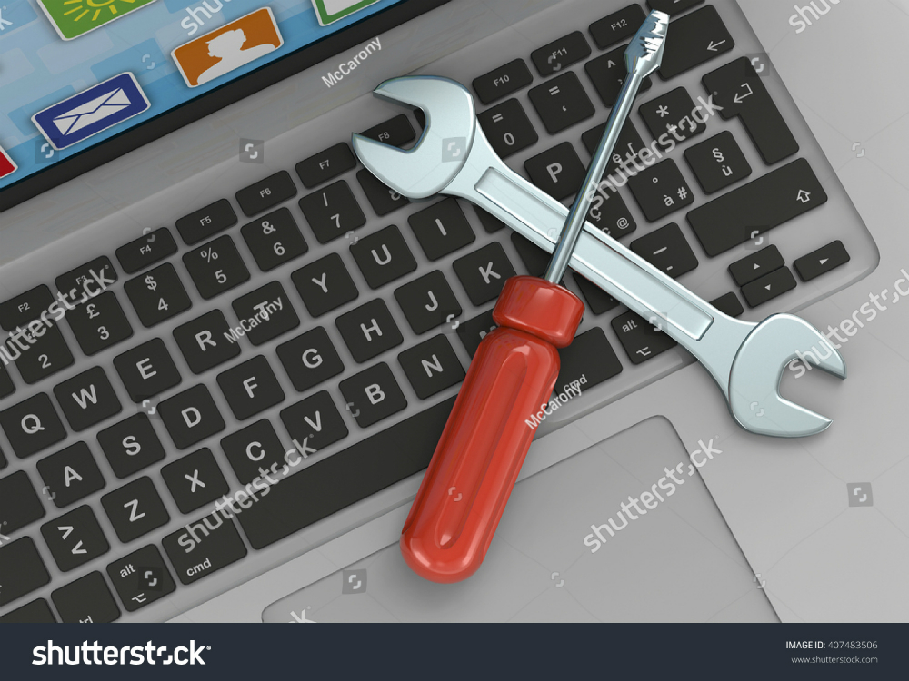
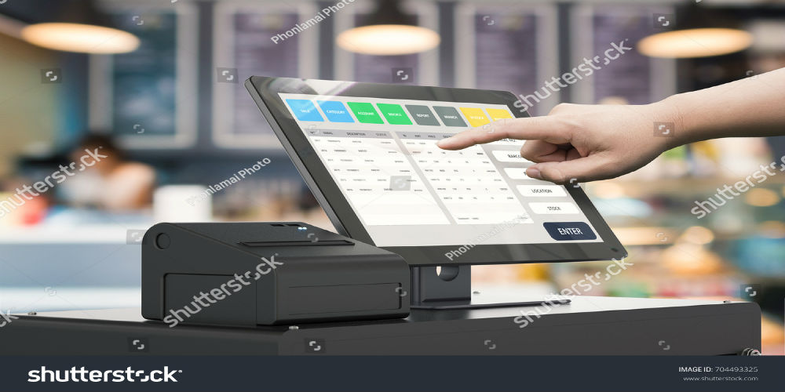

My Experience
About Me
My name is Matthew Isaac Perez. I am twenty-two years old. I am a youngster still looking for myself in this hectic world. I haven't quite found what I am looking for but I am trying to stick to something although some would say that I am not doing a very good job at that either but I digress. On another note however, when I am locked in and focus, I am irreplaceable. I have been around the block in terms of work so I will be displaying my experience on this page.
Writer
I did some freelance writing on my down time in 2013. The sort of writing I did were mostly reviews. I managed to get good enough with this type of writing to get noticed by a group on Facebook called World Anime Club who are based in New Dehli, India. They were creating a magazine called Anime Reign and they wanted me to write a review for their review section on one of their issues. I agreed to do so and the rest is history. This is up my alley however since I am extremely enamored with the realms of the underground, cult, anti-mainsteam and more of the like. My review is on the anime called "Neon Genesis Evangelion" and is featured between pages 21 to 25 on the magazine itself. I am happy that I was given this opputunity. With this venture, I learnt that I could help out organizations and be completely satisfied with my work I did without needing compensation. Here's a link to the issue I wrote on: Anime Reign Volume 1 Issue 2 2013
Computer Assistant
My very first and second job was a computer assistant gig in 2014. The first one was granted to me through a learning to work program that my high school at the time was participating in. The site of this job was PS 100. The second one was gifted to me after my completion of same high school due to me being the top graduate. The location for this job was John Adams High School which was the high school I completed in fact. The jobs dealt a lot with computer maintenance more than anything else with some maintenance done on other miscellaneous equipment from time to time. These two jobs were some of my fondest although I never continued on a computer centric path after I left them until today which was highly regretable thus I wasted quite some time between then and now. At these jobs, I learnt quite a bit on how to work with some hardware and software on the computers although it wasn't in depth but still more than I previously knew.
Telephone Interviewer
My third job was titled as, "Telephone Interviewer" in 2016 at Opinion Access Corp in Long Island City. At this job, the employees were tasked with calling people of a list our employers automated on the computer we used and we attempted to conduct surveys on the people who did answer the calls. The surveys could be about politics, substance abuse, food and more on any given day. I learnt how to keep my professional posture at all times and how to deal with the temperaments and attitudes of the people during the calls.

Bar-back
I did Bar-back work under the table at The Food Hut and Bar in 2016 on Rockaway Boulevard not to far from where I lived. It was short lived and short noted. I mostly worked in the back and fried food for customers when they ordered and just cleaned up at the beginning of the day and at the end of the night. I learnt a bit on how to deal with inebriated people.
Courier
I did courier work in 2017 for two different companies. The first company I worked for was Postmates who are based in San Francisco, California with their New York headquarters being in Brooklyn. The second courier company I worked for is called XPO Logistics who are based in Greenwich, Connecticut with a couple of headquarters being in New York. I specifically worked for their Manhattan branch. I learnt how to navigate the depths of Manhattan while keeping the goods I was delivering in top condition. Showed courtesy and professionalism to the people or organizations I picked-up from and delivered to.
Cashier
I worked at White Castle as a cashier. I worked here in 2017 at the Springfield location. I did more than just cashier work since I started off on the grill and moved my way through the other duties. I learnt how to deal with people at a very quick pace and how to handle money faster as well while keeping composure and professionalism.
Account Executive
My final job as of now was at The Cost Cutters based in Manhattan as an Account Executive. I worked at the Northern Boulevard branch. The basics of the job was to call organizations from a list we create ourselves and try to sell them on discounts we had on office technology. I learnt how to presuade and and pitch a sale to the heads of organizations.
Web Developer
My future job will be Web Development. Despite still being in the process of becoming one, I added this to try and boost my confidence. I want to boost my confidence since I did miss some important classes due to my own mental weakness. I have to trust in the process and be more consistent with classes and my work.